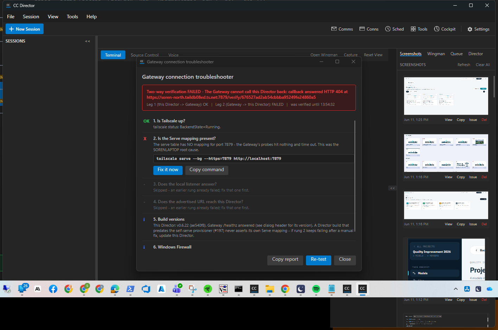

Role: QA Agent (CenCon Development Method) - independent context, separate from the Developer Agent.
PR: #345, branch issue-330-director-events-and-facts @ ae540f8
Date: 2026-06-11
Rig (built and driven by QA, nothing reused from the Developer): own git worktree
D:\ReposFred\wt-qa-330; own slot-6 build cc-director6.exe (PID 55684, Control API
127.0.0.1:7879) launched via the per-slot scheduled task with an ISOLATED CC_DIRECTOR_ROOT
(env-injecting cmd wrapper); registered ONLY with QA's own isolated NEW-code test Gateway
(console host of GatewayHost, 127.0.0.1:7981, isolated root,
CC_GATEWAY_NO_TAILSCALE=1, CC_TURNBRIEFS=0). The user's production fleet,
slots 1-5, and the production Gateway were never touched.
GET /facts - a true remote proof of the NEW surface is structurally impossible until that
machine updates. QA proved the Gateway-leg equivalent locally: the NEW-code test Gateway pulled
GET /directors/{id}/facts through the registered proxy leg over the Director's REAL
advertised tailnet endpoint (https://soren-north.taildb08ed.ts.net:7879 - an actual
HTTPS hop through Tailscale Serve, the exact code path a remote Director exercises). QA also
OBSERVED the clean degradation live: while the endpoint was unreachable the proxy answered 502
(same shape an old 404-answering Director produces).
| # | Criterion | Expected | Actual (QA's own proof) | Verdict |
|---|---|---|---|---|
| 1 | session-created / session-exited observable at the Gateway within 5 s | Events land in the Gateway's per-director ring + structured log shortly after the moment | POST /sessions completed 17:56:57.132Z -> session-created received
17:56:57.211Z (79 ms); second session 18:05:12.620Z -> received
18:05:12.670Z (50 ms). session-exited observed for all three QA
sessions, count = 1 each. Dedupe proven BOTH ways: session 1 died by process exit
(state->Exited, event at 17:57:51) and its LATER roster removal (DELETE of the dead row)
produced NO second event (count stayed 1); sessions 2/3 were active-killed (roster removal
first) and produced exactly one event each.
Evidence: qa-gateway-structured-log.txt,
qa-events-ring-after-restart.json |
PASS |
| 2 | prompt-detected on the detector's transition into an input-prompt state | Session goes Working, detector flips to WaitingForInput, event lands at the Gateway | Prompt sent 18:05:57.162Z -> session observed in Working -> claude finished
-> detector transitioned to WaitingForInput -> prompt-detected received
18:06:11.378Z (state=WaitingForInput). Sourced from the existing detector signal exactly as
the issue's flagged assumption states - no prompt understanding.
Evidence: structured log line at 14:06:11.378 local in
qa-gateway-structured-log.txt |
PASS |
| 3 | Doorbell stays fire-and-forget; Gateway killed mid-stream does not wedge the Director | Director keeps creating/serving sessions while the Gateway is dead; failures logged and dropped; heartbeat reconciles after restart | QA killed its test Gateway at 18:08:54Z. POST /sessions WHILE DEAD -> 201
(session c7a5fabf created), GET /healthz ok, both sessions listed. Director log shows
Heartbeat FAILED ... (127.0.0.1:7981) and
doorbell c7a5fabf... FAILED (dropped; heartbeat reconciles) - logged and dropped,
no wedge, no retry storm. Gateway restarted 18:09 -> Director re-registered within ~25 s via
the heartbeat loop and subsequent session-exited events flowed normally. |
PASS |
| 4 | Tool inventory (names + versions) retrievable through the Gateway | GET /directors/{id}/facts returns the inventory via the proxy leg | 32 tools (name, category, version, isBuilt) + launcher fact pulled through the NEW-code test Gateway over the Director's real tailnet HTTPS endpoint; 25 tools carried versions (0.6.22, resolved from installed.json / binary version resources - deterministic, no process launched; dev-only tools honestly null). Evidence: qa-facts-via-gateway.json. Unreachable-endpoint degradation observed live as 502 (never a hang). Cross-machine caveat above. | PASS |
| 5 | Launcher fact: absent = not installed; launcher.json fixture present = reports the port | Absent file is a valid 200 fact (installed=false); fixture reports its port; read at request time | On the SAME running Director, no restart: no file ->
installed=false, port=null, error=null
(qa-facts-direct-launcher-absent.json);
hand-placed fixture {"port": 7900, ...} -> installed=true, port=7900
(qa-facts-direct-launcher-present.json);
fixture deleted -> installed=false again. The launcher-absent fact also rode the
via-Gateway pull in AC4. Request-time read proven by the flip with zero restarts. |
PASS |
| 6 | Contract changes called out explicitly in the PR description | DoorbellRequest vocabulary + fact DTOs named (plan 1.2.5) | PR #345 description carries a dedicated "CONTRACT CHANGES" section naming
DoorbellRequest.Event + DoorbellEvents constants,
DirectorEventDto, and DirectorFactsDto/ToolInventoryItemDto/
LauncherFactDto, with the both-directions compatibility statement (verified against
the code: null/absent Event = pre-#330 wire shape). |
PASS |
Live QA rig screenshot (slot-6 Director, own build): qa-live-slot6-director.png. The Gateway-connection troubleshooter visible in it reflects a RIG artifact, not a product defect: the isolated test Director is invisible to the machine's production Gateway, whose 5-minute orphan sweep repeatedly removed the test Director's self-provisioned serve mapping (the #179 sweep working as designed). The two-way handshake passed at registration and the facts pull succeeded over that same endpoint whenever the mapping was present.

Build succeeded. 0 Warning(s) 0 Error(s).DictationEndpointTests.FullPipeline_transcribes_phase0_clip2_with_realtime_provider.
Non-regression verified by QA independently: the same test fails with the
identical assertion ("expected at least 1 partial transcript, got 0") on base
main @ 43f1831 with zero #330 changes - the known pre-existing live-OpenAI flake.docs/architecture/gateway/CONTRACT_AUDIT.md updated in the PR (row 94
GET /facts, inventory 114 -> 115, section 5 doorbell vocabulary + ring sink).
No DT-* blocking rule touched; GET /facts sits behind the same host auth middleware
as every Control API route.{kind=link}